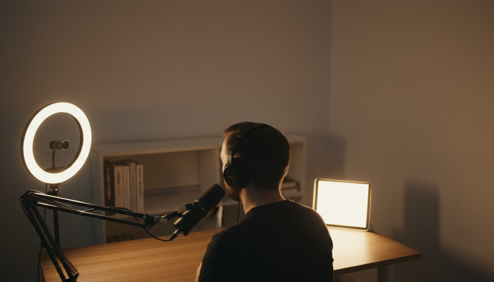
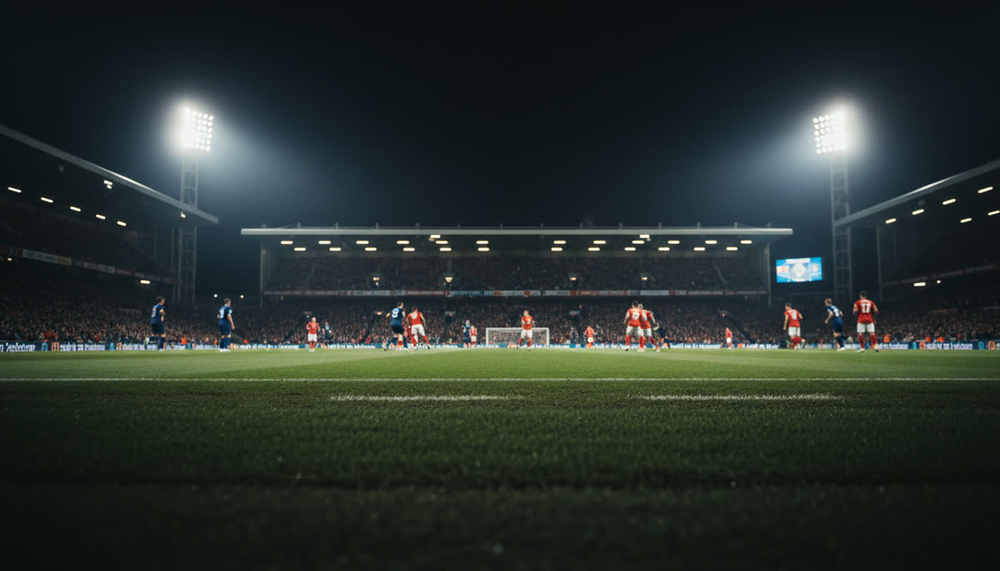
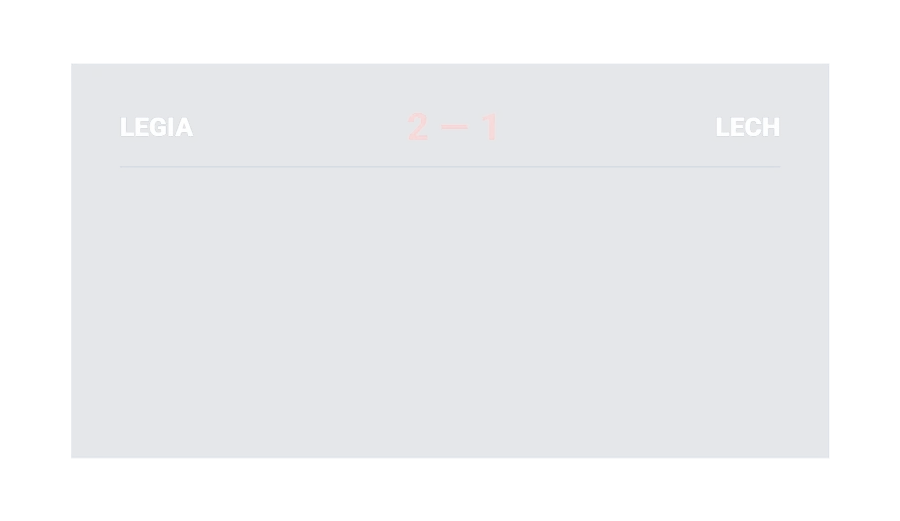
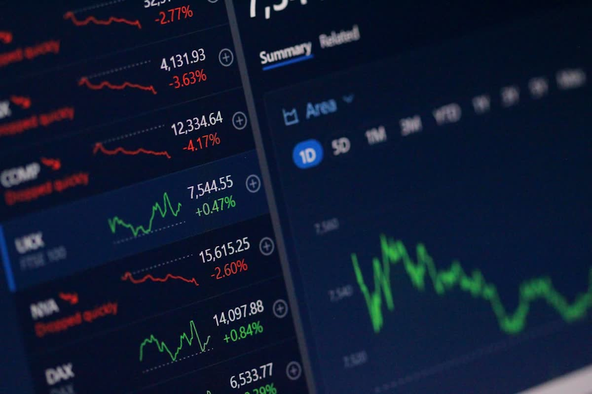
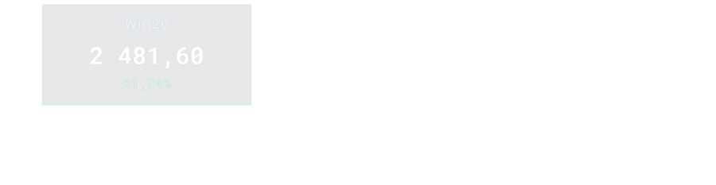
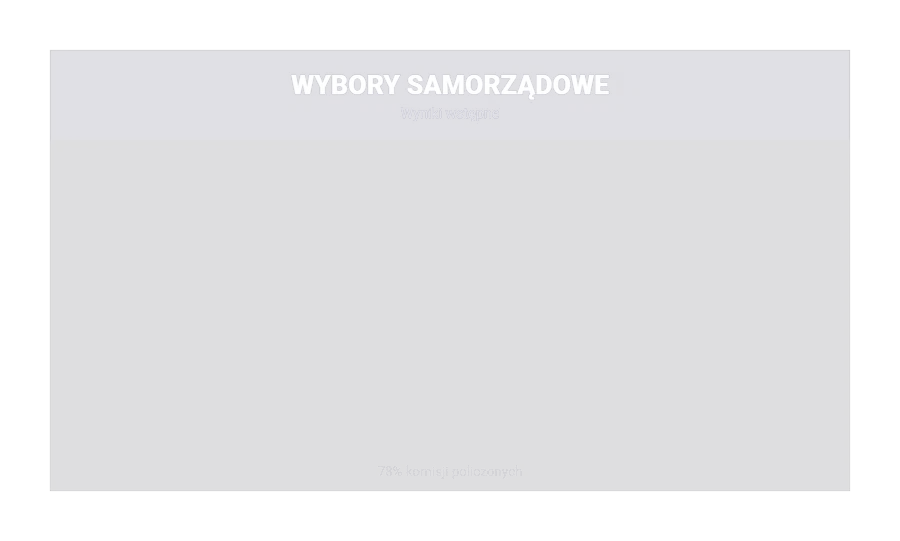
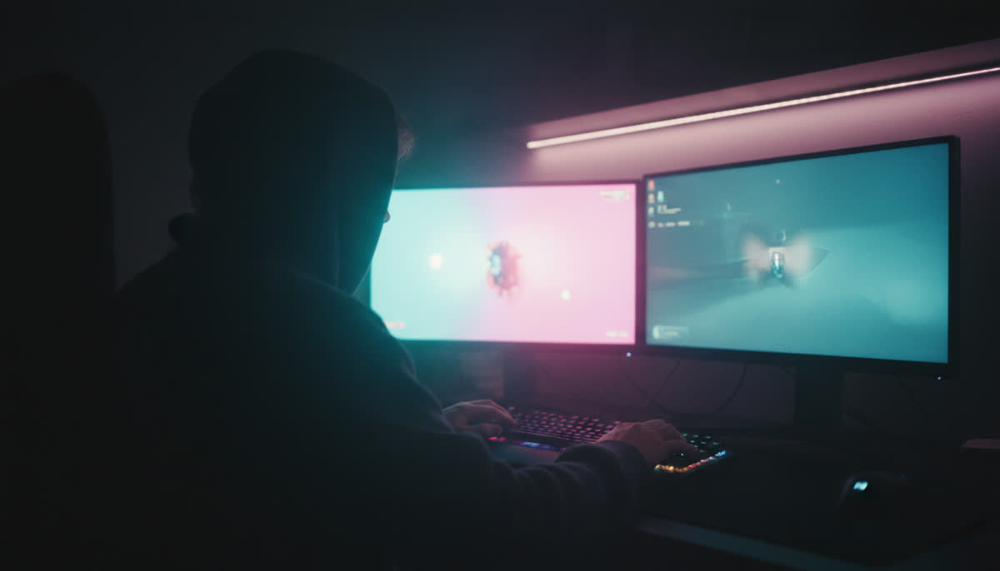
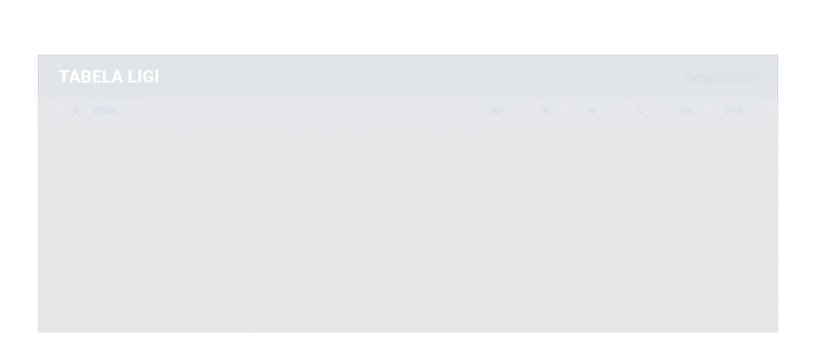

Voice control is live
Say it.
Put it on screen.
Pellar turns a spoken update into an animated broadcast graphic. Scores, polls, standings and market moves, while you stay live and keep talking.
- Voice command
- Live
- Animated templates
- Working
- Creator edition
- Early access
PELLAR / LIVE SCENE00:42:17:08

On air Sample data
Sample data
Heard"Put the poll up."
IntentSHOW_GRAPHIC Sent
01 / Control room proof
Built for live rooms.
Now usable by one creator.
Pellar borrows the logic of a broadcast control room: a cue comes in, the right graphic is selected, and the output goes on screen without stopping the show.
SPORT
MARKETS
CURRENT AFFAIRS
ESPORTS
01 / Voice workflow
One sentence.
Four systems move.
Pellar listens for the update, reads the values, chooses the right working template and sends it to the live scene.
52%48%
LIVE 00:42
02 / Working templates
Broadcast graphics.
No blank canvas.
You choose the format. Pellar keeps the type, spacing and motion intact while the live data changes.


Try saying"Show the match stats."
Live feature / captured concept sequence
03 / Hands stay free
Keep presenting.
Pellar takes the cue.
Voice is built for the moment when you cannot stop the show to open a menu. Speak the change. Pellar updates the graphic while you stay with your audience.
"Pellar, show the latest standings."
- Voice command live now
- Manual control remains available
04 / One operator
Built for the person running the whole show.
Scores move fast.
Bring up match stats, standings and score changes while the moment is still live.


Numbers are the story.
Put an index, price move or comparison on screen without breaking your explanation.

The result just landed.
Turn a poll, election result or live count into a readable graphic in the same conversation.


The table changed.
Update rounds and standings without handing control of the stream to somebody else.
Veles Productions / Broadcast work
05 / Where it comes from
Made by people who put graphics on air.
Veles Productions builds virtual studios and broadcast graphics for live television. Pellar puts that production logic into a tool one creator can run.
Broadcast craftturned into repeatable templates
Working outputshown with sample data on this page
Early adopter sessions
What would you put on screen first?
Join the early-access list. Tell us what you stream and we will use it to prioritise the first creator workflows and onboarding guides.